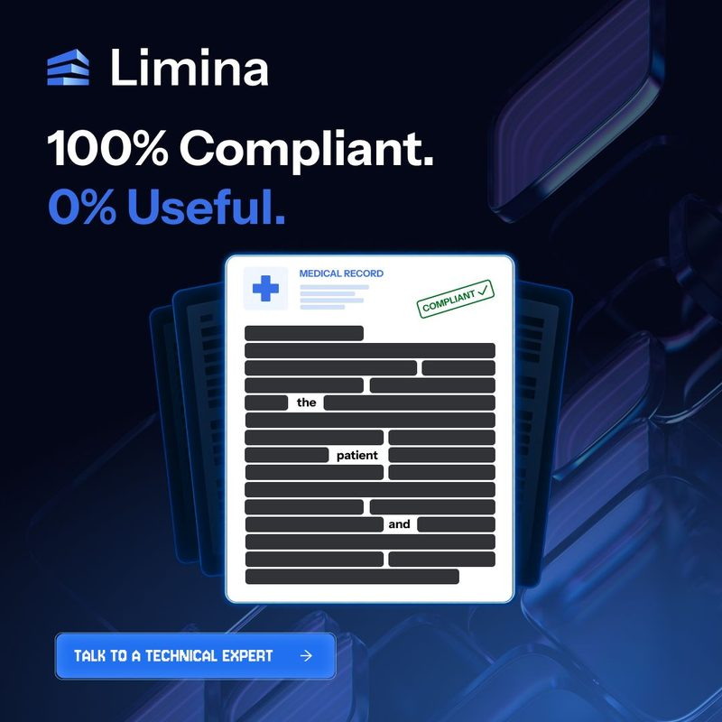
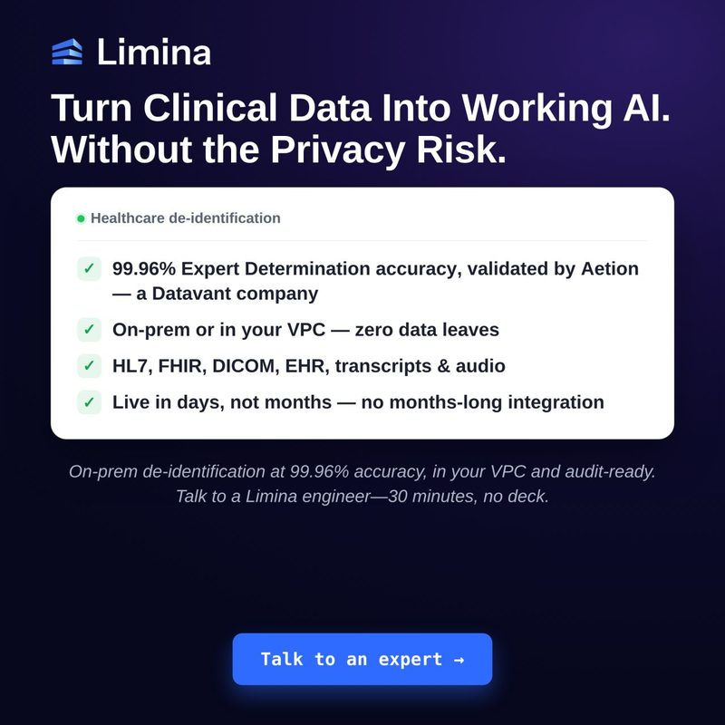
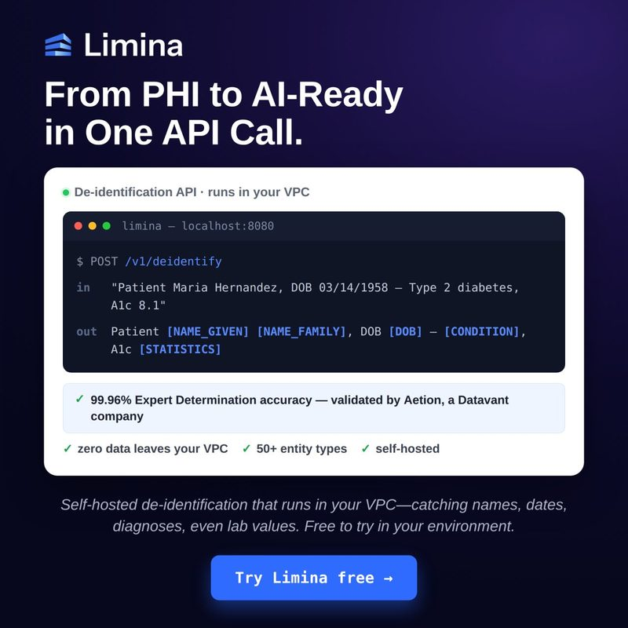
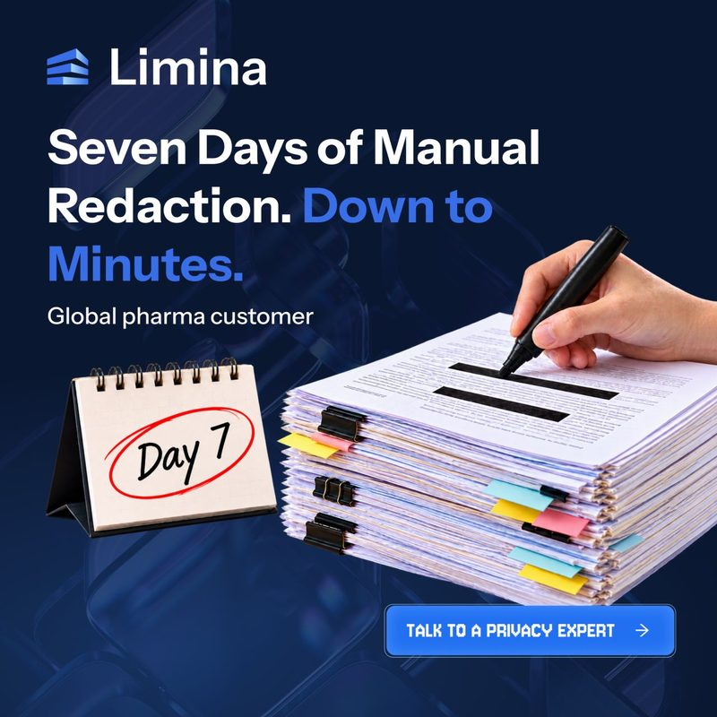

I read every Limina ad in LinkedIn's Ad Library the way a privacy lead reads them on a phone at 8am: fast, skeptical and one thumb away from scrolling past. Then I checked each one against how the best B2B advertisers work. Below you'll find the patterns, a card for every ad and six full rewrites with new creative. Last comes a test plan, so we find out what actually works instead of guessing.




Limina already has hooks most B2B brands would pay for. The four changes below are about lining the ads up with each other and with where each reader is in the buying journey.
"Is Hope a feeling or a patient?", "100% Compliant. 0% Useful." and "You cleared every structured field. The notes still name the patient." read like a clinician's real problem, not a vendor pitch.
Ad 1535868536 says 99.5% in the text and 99.96% in the image. Both may be true, since they measure different things, but the ad never says what each one measures.
Seven ads end in "Talk to an expert" (or a technical, privacy or security expert). Only 3 point to the ungated sandbox, which is the lowest-friction, highest-proof offer Limina has.
Patricia Thaine and Tyler appear only inside Message Ads. Thought leader ads (boosted posts from a person) had a median CTR of 2.68%, against 0.42% for single image ads, in one 161,256-ad study.
These rules come from LinkedIn's own ad specs, B2B marketing research and what the best B2B advertisers do. Each one has the technical reason, so it is not just taste.
On mobile, LinkedIn cuts the intro text and shows "...see more". Most people never tap it, so the hook and the reason to care must both sit before the cut.
On any given day only about 5% of buyers are in market. The other 95% won't book a call, but they will remember you when the moment comes, if the ad tied Limina to that moment.
People don't search for "de-identification". They hit a moment: "we're putting notes into an LLM", "security flagged a new vendor", "the redaction backlog is three weeks". Ads should name those moments word for word.
Cold readers get value with no strings (sandbox, guide). Warm readers (site visitors, video viewers, sandbox users) get the trial or the engineer call. Hot accounts get a message from a person.
"99.5%" is a claim. "99.5% accuracy on Providence Health's clinical notes" is proof. "Global pharma customer" reads as anonymous, and anonymous reads as unverified.
A scroller gives an ad about a second. One idea gets read. Six ideas get skipped together.
Limina's ads already look like a family: navy, electric blue, logo top-left. That's a real asset. Add one recurring device that only Limina uses: the redaction bar, which becomes a tag.
High CTR feels good, but it isn't revenue. Track sandbox runs, account reach inside the target list, meetings and pipeline.
Sources: ZenABM, LinkedIn Ads Benchmarks 2026 (vendor data, 161,256 ads) · ZenABM, Thought Leader Ads guide · Dreamdata on the 95:5 rule (John Dawes) · LinkedIn B2B Institute, Category Entry Points in a B2B World · ClickMinded, LinkedIn Ads Benchmarks
Median CTR by format across 161,256 B2B ads (ZenABM 2026). Limina runs single image, carousel, document and message ads today. The biggest format is missing.
Thought leader ad CTR counts every click (likes, comments, "see more"), so it reads higher than a landing-page-only CTR. Even on eCTR, the top thought leader ad in their gallery hit 4.69%. Use this to pick formats to test, not as a promise.
Each card shows the ad as it runs and four scores. Hook means it stops the scroll. Clarity means one idea. Proof means specific and traceable. Fit means the ask matches the reader's temperature. Then comes what to keep, what to change and the reason why. Copy is quoted from the Ad Library as it appears, cut-offs included.
I didn't pick these at random. They're the ads where the hook is already strong (so a fix multiplies it) or where one change moves the ad to a cheaper, better offer. Every creative stays in Limina's look.
The paradox is the best headline in the account. Right now the image only shows the problem (a blacked-out page), and the text repeats the same idea. The fix: show the useful version next to the blacked-out one, use the text for proof and send cold readers to the sandbox instead of a call.
Before launch: run the exact sample sentence through the Limina sandbox and use the real output in the right-hand panel. What's shown here is illustrative.
"Is Hope a feeling or a patient?" proves the product in one sentence: context is the hard part, and Limina reads context. It currently ends in "Talk to an expert". It should end with "try this exact sentence", because the reader is already curious about the answer.
The series: same layout, three sentences, rotated every 2 to 3 weeks
Before launch: run all three sentences in the sandbox and match the creative to the real output. If the outputs differ, that's useful too, and the copy should follow the product.
"One tired reviewer away from a missed name" is a great human line, and the Day 7 calendar works at a glance. The weak spot is "Global pharma customer": anonymous proof reads as unverified to a skeptical buyer. Limina already has a public story to put a name on it.
Check first: the original says "seven days" for a global pharma customer. The public Boehringer Ingelheim result is 48 hours to minutes. If seven days is a different customer, keep seven days and add that customer's name, or the volume and method, instead. Never mix the two numbers.
This is the smartest argument in the account: sending patient data to a third-party API to protect it adds another party to your risk. The current card titles are abstract ("Every request crosses the line"). Carousels have the lowest median CTR of the formats Limina uses (0.32%), so each card has to make the reader want the next one.
One more party with your data
Every request crosses the line
Runs in your infrastructure
Talk to a security expert
Card 4 shows the shape of the commands only. Use the real two commands from Limina's docs before launch.
The original is short (good) and offers the ungated sandbox (very good). Three small things hold it back: a typo ("its"), a strong claim with no source ("most de-identified data is still traceable") and an inside reference ("3-unit-minimum billing tax") that only buyers of one specific competitor will get.
Limina doesn't run this format yet, and it had the highest median CTR in the benchmark. Patricia Thaine is already a recognised voice in privacy, and people stop for a face and a first-person sentence. This is a draft for Patricia to edit in her own voice. It reuses the Hope sentence so the brand ads and her post support each other.
Objective: engagement first, then retarget the engagers with Rewrite 2 and the trial ad.
Audience: privacy, security, data science and clinical informatics titles at the ABM target accounts, plus a broader healthcare and life sciences layer.
Budget test: 4 to 6 of Patricia's posts at once, then keep boosting the top two (the setup ZenABM suggests for testing).
Measure: eCTR and sandbox runs from the comment link, not likes. A thought leader ad's CTR counts likes and "see more" taps, so it always looks inflated next to a single image ad.
The moments a buyer actually lives through, mapped to the ad that should own each one. Two moments have no ad yet.
| The moment (in the buyer's words) | Who has it | Ad that owns it | Offer |
|---|---|---|---|
| "We're putting clinical notes into an LLM or RAG pipeline." | ML / data science lead | RAG document ad · Rewrite 2 | Guide, then sandbox |
| "We cleaned the structured fields. The notes still name patients." | Data engineering, privacy | 2026 EHR guide ad | Guide |
| "Our de-identified data came back useless." | Data science, research | Rewrite 1 | Sandbox |
| "Security flagged another third-party processor." | CISO, security architect | Rewrite 4 · "every third-party processor" ad | Sandbox, then trial |
| "The redaction backlog is weeks long." | Privacy ops, legal ops | Rewrite 3 · manual redaction carousel | Customer story |
| "Legal needs Expert Determination for this dataset." | Privacy officer, counsel | Proof ad (99.96% with validator named) | Engineer call, 30 min, no deck |
| "Our data has to stay in-country." | CIO, public sector, FSI | Patricia's AI sovereignty message ad | Event, then field guide |
| "Call recordings are full of card numbers." No ad yet | Contact centre, FSI compliance | New: PCI in transcripts | Sandbox with a transcript sample |
| "We want to share data with a research partner." No ad yet | Research, data partnerships | New: data sharing without the data | Guide |
Almost every ad today is about healthcare PHI. PII and PCI show up only in descriptions. If financial services is part of the ICP (two of the sample ABM accounts in my plan are), the PCI moment deserves its own ad set.
Three temperature layers, each with its own ads, offer and success metric. Then four clean A/B tests that change one thing at a time.
| Layer | Who | Ads | Offer | Success metric | Budget |
|---|---|---|---|---|---|
| Cold | Job functions (privacy, security, ML, clinical informatics) at target accounts, plus the wider industry | Patricia's thought leader ads, Hope series, Rewrite 1, EHR guide | Sandbox, guide | Sandbox runs per 1,000 impressions, account reach % of the list | ~60% |
| Warm | Site visitors (90 days), video viewers 50%+, document openers, sandbox users | Rewrite 3 (named proof), Rewrite 4 (API carousel), free trial code ad | Free trial, customer story | Trials started, cost per trial | ~30% |
| Hot | Pricing and docs visitors, trial users, accounts with MDR activity | Tyler's message ad (Rewrite 5), event invites, proof ad | Engineer call, 30 min, no deck | Meetings held, pipeline | ~10% |
Run the Hope ad with "Talk to an expert" vs "Try this sentence". Judge on meetings and pipeline at 60 days, not clicks. This one test settles whether sandbox-first works for Limina.
"Global pharma customer" vs "Boehringer Ingelheim" on the same layout. Measures how much a name is worth with this audience.
The same message posted from the Limina page and boosted from Patricia. Compare eCTR and sandbox runs, not raw CTR.
"99.5%" vs "99.5% on real clinical notes" vs "99.96%, validated by Aetion". Finds the proof format a privacy buyer trusts most.
One variable per test. Run each arm for at least 2 weeks and 100+ clicks before calling it (my working rule, so one good day doesn't decide anything). Refresh a creative when its CTR falls about 20% below its first two weeks, or when frequency in the same audience climbs past about 4 in a month. Today the free trial ad shows up 3 times in the 22 newest results, so it's a refresh candidate.